Agents you can see without switching windowsAgent yang terlihat tanpa pindah jendela
Ask from the launcher, keep working, and glance up. TheAI follows the sessions you already run in the terminal, VS Code or the desktop apps, not only its own. Tanya dari launcher, lanjut bekerja, lalu lirik ke atas. TheAI mengikuti sesi yang sudah kamu jalankan di terminal, VS Code, atau aplikasi desktop, bukan hanya miliknya sendiri.
Type / and get the job doneKetik / dan pekerjaan beres
The launcher is a command palette. Smart commands turn into a complete request for the agent, using what you typed or what's on the clipboard.Launcher-nya adalah command palette. Perintah pintar jadi permintaan lengkap untuk agent, dari teks yang kamu ketik atau isi clipboard.
- review
- explain
- fix
- translate ja
- commit
- focus 25
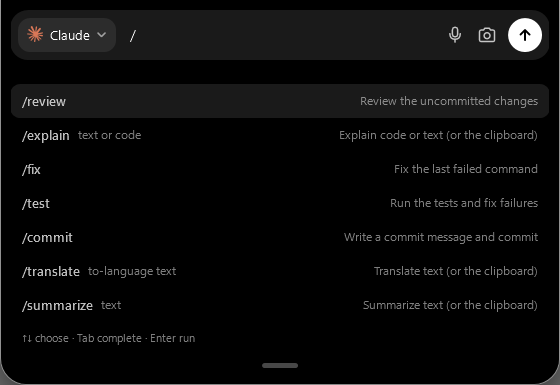
Select anything, ask about itPilih teks apa saja, tanyakan
Select text in any app and press the quick-capture hotkey. The notch offers to translate it, explain it, summarize it or fix the writing, and the answer comes back right there, without opening a chat.Pilih teks di aplikasi mana pun lalu tekan hotkey quick-capture. Notch menawarkan menerjemahkan, menjelaskan, meringkas, atau memperbaiki tulisannya, dan jawabannya muncul di sana tanpa membuka chat.
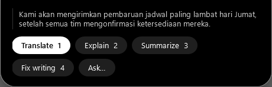
Focus first, answers at the breakFokus dulu, jawabannya saat istirahat
During a pomodoro or a meeting from your calendar, agents finishing or asking for permission don't pop up. The notch counts them, and shows them all together when the break starts.Selama pomodoro atau rapat di kalendermu, agent yang selesai atau minta izin tidak muncul tiba-tiba. Notch menghitungnya, lalu menampilkan semuanya sekaligus saat istirahat.
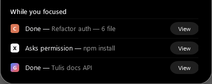
Builds, CI and scripts report themselvesBuild, CI, dan skrip melapor sendiri
Anything slow becomes a live activity with a progress ring. When it fails, one click hands the failure to your agent.Apa pun yang lama jadi aktivitas dengan cincin progres. Kalau gagal, satu klik menyerahkannya ke agent.
Three ways inTiga jalan masuk
PowerShell commands that run 10 seconds or more appear on their own. Your pull request's checks are read through the GitHub CLI you're already signed in to. Scripts can report anything else:Perintah PowerShell yang berjalan 10 detik atau lebih muncul sendiri. Check pull request dibaca lewat GitHub CLI yang sudah login. Skrip bisa melaporkan apa saja:
# any script, any language
TheAI.exe activity deploy --title "deploy staging" --progress 0.4
TheAI.exe activity deploy --done
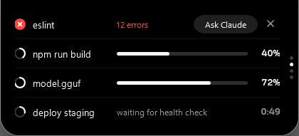
The rest of your day, one scroll awaySisa harimu, satu scroll saja
Every page is optional. On first start you pick what the notch does, and you can change it any time. Hover the notch and scroll to move between pages.Setiap halaman opsional. Saat pertama dibuka kamu memilih apa yang dilakukan notch, dan bisa diubah kapan saja. Arahkan kursor ke notch lalu scroll untuk berpindah halaman.
Timer & pomodoroTimer & pomodoro
Countdowns, a stopwatch and alarms, typed like "+5" or "@7:30".Hitung mundur, stopwatch, dan alarm, cukup ketik "+5" atau "@7:30".
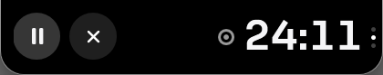
CalendarKalender
A countdown to your next meeting and a button to join the call.Hitung mundur ke rapat berikutnya dan tombol untuk bergabung.
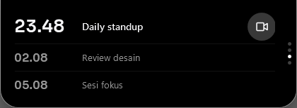
Reminders & to-doPengingat & to-do
Typed the way you say it: "15m stretch", "14:30 call", "tomorrow 9:00 standup".Ketik seperti biasa: "15m peregangan", "14:30 telepon", "besok 9.00 standup".
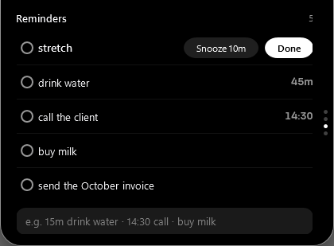
Weather & world clockCuaca & jam dunia
Today's weather for your city and the time in up to four other zones.Cuaca hari ini di kotamu dan jam di hingga empat zona lain.
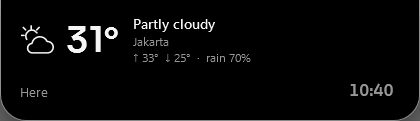
Clipboard historyRiwayat clipboard
Your last 30 copies. Password managers' copies are skipped. Off until you turn it on.30 salinan terakhir. Salinan password manager dilewati. Mati sampai kamu nyalakan.
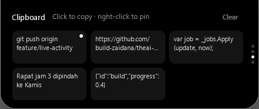
Today's recapRekap hari ini
Focus time, what the agents finished, files changed. One click copies it for standup.Waktu fokus, hasil agent, file yang berubah. Satu klik menyalinnya untuk standup.
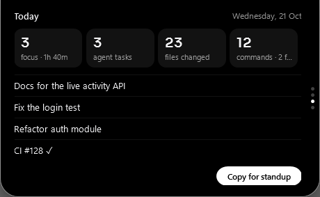
File shelfRak file
Drop files on the notch to keep them handy. New downloads land here for two hours.Taruh file di notch supaya mudah dijangkau. Unduhan baru masuk ke sini selama dua jam.
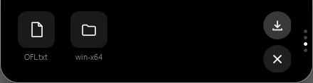
System & HUDSistem & HUD
CPU, GPU, memory and disk, plus volume, brightness and battery in place of Windows' pop-ups.CPU, GPU, memori, dan disk, plus volume, kecerahan, dan baterai menggantikan pop-up Windows.
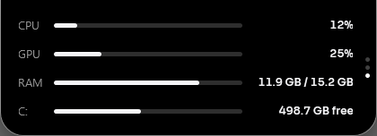
Your data stays on your PCDatamu tetap di PC-mu
No account, no analytics, nothing sent in the background. Here is every time TheAI talks to the network, and why.Tanpa akun, tanpa analitik, tidak ada yang dikirim diam-diam. Ini setiap kali TheAI memakai jaringan, dan alasannya.
Talks to the networkMemakai jaringan
- Your AI providerPenyedia AI-mu
- Only what you ask, through Claude Code, Codex, Gemini CLI or the API key you choose.Hanya yang kamu tanyakan, lewat Claude Code, Codex, Gemini CLI, atau API key pilihanmu.
- GitHub, once a dayGitHub, sekali sehari
- To see if a new version is out. Updates install only when you click "Update now", after the download's checksum matches.Untuk melihat versi baru. Pembaruan dipasang hanya saat kamu klik "Perbarui sekarang", setelah checksum unduhannya cocok.
- Optional extrasTambahan opsional
- Weather (Open-Meteo: only your city and its coordinates), pull request checks (through your own GitHub CLI), synced lyrics (LRCLIB) and an iCal calendar link, each off until you enable it.Cuaca (Open-Meteo: hanya kota dan koordinatnya), check pull request (lewat GitHub CLI-mu), lirik (LRCLIB), dan tautan kalender iCal, masing-masing mati sampai kamu aktifkan.
Stays localTetap lokal
- Settings, conversations, recapPengaturan, percakapan, rekap
- %LOCALAPPDATA%\TheAI
- API keys and the calendar linkAPI key dan tautan kalender
- Windows Credential Manager, never in a file.Windows Credential Manager, tidak pernah di file.
- Scripts and the clipboardSkrip dan clipboard
- A pipe only your own Windows user can reach; clipboard history lives in memory.Pipe yang hanya bisa dijangkau user Windows-mu; riwayat clipboard hanya di memori.
QuestionsPertanyaan
Windows says "Windows protected your PC". Is that normal?Windows bilang "Windows protected your PC". Normal?
Yes, for now. The installer isn't code-signed yet, so SmartScreen doesn't recognise the publisher. Click "More info" and then "Run anyway". Each release lists the installer's SHA-256 so you can check the download.Ya, untuk sementara. Installer-nya belum bertanda tangan kode, jadi SmartScreen belum mengenal penerbitnya. Klik "More info" lalu "Run anyway". Setiap rilis mencantumkan SHA-256 installer supaya unduhanmu bisa dicek.
Which AI do I need?AI apa yang dibutuhkan?
Any one of: Claude Code or Codex (signed in with your subscription), or an API key for Anthropic, OpenAI or OpenRouter. Gemini CLI sessions can be shown in the notch too. TheAI walks you through it on first start.Salah satu: Claude Code atau Codex (login dengan langgananmu), atau API key Anthropic, OpenAI, atau OpenRouter. Sesi Gemini CLI juga bisa tampil di notch. TheAI memandu saat pertama kali dibuka.
Will it slow my PC down?Apakah memperlambat PC?
It's built to sit quietly: about 1% of one CPU core and roughly 125 MB of memory at rest, and it hides while a game or video is fullscreen.Dibuat untuk diam: sekitar 1% dari satu inti CPU dan kira-kira 125 MB memori saat diam, dan bersembunyi saat game atau video layar penuh.
Can I turn things off?Bisakah fiturnya dimatikan?
Everything except the agent and the launcher is optional. TheAI asks on first start, and Settings → Notch → Choose features changes it later.Semua kecuali agent dan launcher bersifat opsional. TheAI bertanya saat pertama dibuka, dan Pengaturan → Notch → Pilih fitur mengubahnya nanti.
I used CodexBar before.Sebelumnya saya pakai CodexBar.
TheAI is the new name. Install it over CodexBar: your settings, conversations and saved keys move over on the first start.TheAI adalah nama barunya. Pasang di atas CodexBar: pengaturan, percakapan, dan key yang tersimpan pindah otomatis saat pertama dibuka.